"The Same Game", Part 4 of 5: Adjusting Board Size and Block Count
"The Same Game", Part 4 of 5: Adjusting Board Size and Block Count
By Ben Marchant
Introduction
Our version of the SameGame is really taking shape. We have a game that can be played from start to finish in five different levels of difficulty. In this article we'll be adding more options to customize the game play. We'll add the ability for the user to adjust the size of the blocks and the number of blocks on the game board. In order to get these values from the user we'll create a dialog box to prompt them for input.
Adjusting the Size and Block Count
The first step is to update the game board and document classes to be able to adjust these options. Starting with the game board we'll make some very minor adjustments to the header file only. We already have "getter" functions in the game board class to get the values of the width and height of the blocks in pixels and the number of rows and columns on the board. Now we'll add "setter" functions to set these values. Update the accessor function area in the game board class in SameGameBoard.h to look like the following (changes bolded).
/* Accessor functions to get/set board size information */
int GetWidth(void) const { return m_nWidth; }
void SetWidth(int nWidth)
{ m_nWidth = (nWidth >= 3) ? nWidth : 3; }
int GetHeight(void) const { return m_nHeight; }
void SetHeight(int nHeight)
{ m_nHeight = (nHeight >= 3) ? nHeight : 3; }
int GetColumns(void) const { return m_nColumns; }
void SetColumns(int nColumns)
{ m_nColumns = (nColumns >= 5) ? nColumns : 5; }
int GetRows(void) const { return m_nRows; }
void SetRows(int nRows)
{ m_nRows = (nRows >= 5) ? nRows : 5; }
I've added the set functions right after the get functions for easier reading and comprehension of the class. The functions are fairly simple. We use a simple test on each of the values to make sure that they don't go below a specified value, three for the pixel height/width and five for the row/column values. Numbers smaller than these will mess up the aesthetics of our game board.
Next we update the document in a similar fashion adding "setter" functions to go along with our "getters". These functions are added to the SameGameDoc.h header file just like the game board (changes bolded).
int GetWidth(void) { return m_board.GetWidth(); }
void SetWidth(int nWidth) { m_board.SetWidth(nWidth); }
int GetHeight(void) { return m_board.GetHeight(); }
void SetHeight(int nHeight) { m_board.SetHeight(nHeight); }
int GetColumns(void) { return m_board.GetColumns(); }
void SetColumns(int nColumns) { m_board.SetColumns(nColumns); }
int GetRows(void) { return m_board.GetRows(); }
void SetRows(int nRows) { m_board.SetRows(nRows); }
Now all we have to do is prompt the user for new sizes, resize the game board, resize the window and repaint...all this will go in the event handlers for the menu options. All of these things are very trivial except for prompting the user for new sizes. We'll create a new dialog to do this. Creating a new dialog begins with displaying the resource editor window in Visual Studio. Open up the Resource View under the "View" menu "Resource View" or the accelerator key Ctrl+Shift+E. You'll recognize this view from when we edited the menu system for our game. This time instead of opening the Menu option, open the Dialog option. You'll see that there is one dialog already there with the ID of IDD_ABOUTBOX. If you've noticed under the About menu there is a dialog that comes up with "About" information. This dialog is automatically generated by the MFC Application Wizard when we first set up our project. Adding a new dialog is simple, just right-click on the Dialog option in the Resource View and select "Insert Dialog" and a new, mostly blank, dialog will appear with the ID of IDD_DIALOG1 like the image below.
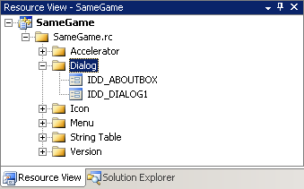
Once you double-click on the IDD_DIALOG1 option, the dialog editor will appear in the main window in Visual Studio. I said earlier that the dialog was a "mostly blank" dialog because MFC generates a dialog with both an Ok button and a Cancel button. Yours should look something like this when we first begin.
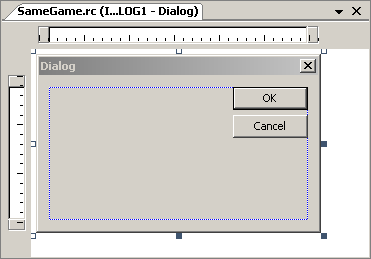
We'll use this dialog to prompt the user for both board size, rows and columns, and block size, width and height, so we'll have to make it generic. This dialog won't do much for us until we add some new controls. We'll add labels, edit boxes, and another button to the dialog to make it functional. We first need to bring up the dialog editor Toolbox through the View menu then "Toolbox" or Ctrl+Alt+X. Let's take a look at the Toolbox.
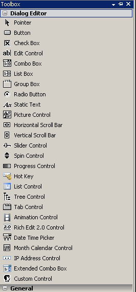
This is a list of what are called Common Controls. These are Windows controls that are common to most Windows applications. Most, I'm sure, look very familiar to you. There is a button, check box, etc. You can research these controls if they don't look familiar to you. We'll be using the "Static Text" control to indicate what input the user is supposed to input to each of the "Edit Controls". We'll also add a button to allow the user to restore the default values. To add a control, simply click and drag the desired control from the Toolbox right on to the dialog in the Dialog Editor. Let's start with the button, click and drag one just below the Ok and Cancel buttons, like so.
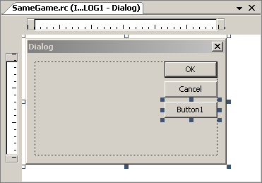
To change the text on the button face, just click on the button so it is selected like the image above and start to type "Defaults". Now we need a couple of "Edit Controls" added. Click and drag a couple on the dialog. In order to line them up you can click on the rulers above and to the left in the Dialog Editor to create guides that snap to the controls. I've added a few to line up my edit controls with the buttons.
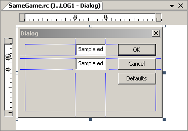
Finally let's add a couple of "Static Text" controls to describe to the user what to type into the Edit Controls. I'm going to add two new guides that will line the static text up with the middle of the edit controls and extend the size of the static text. These text controls will have their text inserted programmatically so that it can change depending on the type of data we want from the user.
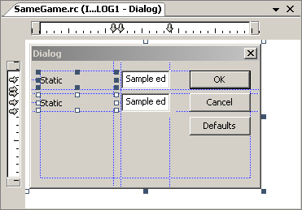
This is how our dialog will look for both of the menu options that we'll be working with in this article, "Block Size..." and "Block Count..." All we have to do is change the title of the dialog, the static text and the values in the edit controls based on what we want to prompt the user for. In order to do this we need to make a few changes to the IDs of the controls that we've added. As they sit we are unable to interact with the Static Text controls; they need new IDs. Pull up the properties window by pressing Alt+Enter or from the menu View->Other Windows->Properties Window. When you click on a control, the properties for that control will come up. I've selected the ID option that needs to be changed.
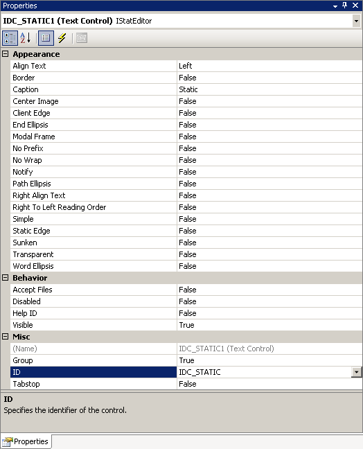
The ID IDC_STATIC is a reserved ID that is for all generic static text controls; let's change it to something like IDC_STATIC_TEXT_1. While we're at it, let's change the IDs for all of the controls and the dialog. To do this, leave the properties window up and click on a different control. This will fill in the properties for that particular control. Then just change the IDs. We'll need the top static text to be IDC_STATIC_TEXT_1 and the other IDC_STATIC_TEXT_2. Then rename the edit controls to IDC_EDIT_VALUE_1 for the top edit control and IDC_EDIT_VALUE_2 for the other. We do this so that we can dynamically change the text depending on the data we want the user to enter. The button we added for "Defaults" we'll rename to IDC_BUTTON_DEFAULTS. Finally change the ID of the dialog from IDD_DIALOG1 to IDD_DIALOG_OPTIONS. These changes will help when creating the dialog and displaying it to the user.
Once the dialog is set up in the dialog editor, we need to produce code for it. Simple enough, just right-click on the dialog itself, not any of the controls, and select "Add Class..." You'll be presented with the MFC Class Wizard. This gives us a class that represents this dialog that we've created that we can use in our code. Add in the class name COptionsDialog and everything will fill itself out. Clicking finish will generate the OptionsDialog.h and OptionsDialog.cpp files.
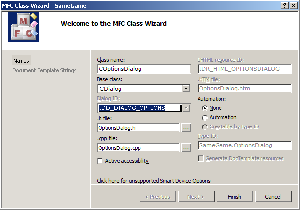
Before we look at the code that has been created for us let's make some variables in this class that represent the controls that we added. Go back to the dialog editor and right-click on each of the controls, one by one, and select "Add Variable..." to bring up the Add Member Variable Wizard. This will add a variable to the class that we just created and associate it with the control that we right-clicked on. Since I first clicked on the first static text control the wizard will look like the image below. Fill in the Variable Name with m_ctrlStaticText1 like I did and click Finish. This will add all of the necessary code to the dialog class.
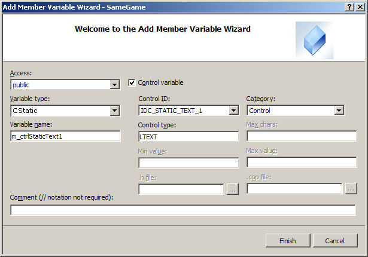
For now we can keep the defaults. We want a control variable of type CStatic so that we can change the text in the static text control whenever we want. We'll select a different option when we get to the edit controls. Repeat this with the second static text control giving it the variable name m_ctrlStaticText2.
Now right-click on the first edit control and select "Add Variable..." This time we want a "Control Variable" but a Value control variable so drop down the "Category" and select value. This will change the "Variable Type" options from types of MFC controls to types of values; the default is likely to be CString, but select "int". Type in the name of the variable m_nValue1. Here we are setting an integer as the storage place for the value in the edit control and when the user clicks Ok, that value will be stored in the variable that we've created without us writing any code to do so. See the screenshot below to see what I did.
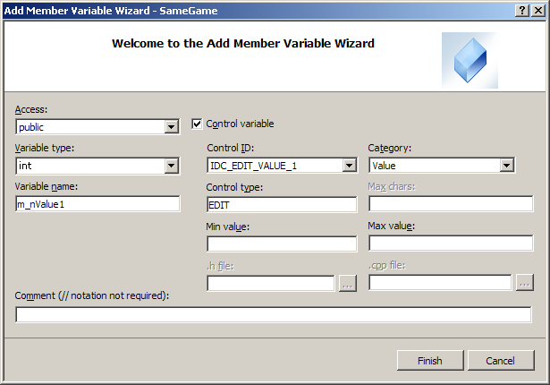
Repeat this process with the second edit control and give it the name of m_nValue2.
Now we need to add an event-handler to the class for the Defaults button. Just right-click on the button and select "Add Event Handler..." This will bring up the Event Handler Wizard that will allow you to create all kinds of event handlers for all of your classes. If you right-clicked on the Defaults button the wizard will default to the BN_CLICKED, which stands for button clicked, event for the defaults button. Just click "Add and Edit" and you'll be whisked away to the options dialog code where a button event handler will be waiting for you.
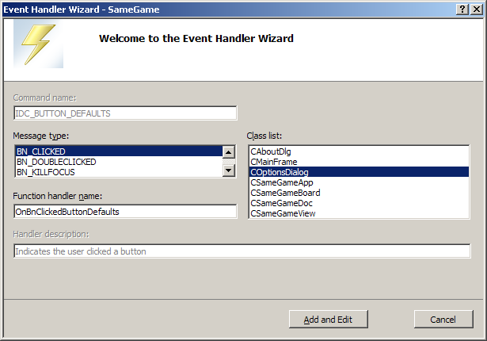
The last thing that we are going to need is an override for the OnInitDialog function. In a previous article we talked about overrides so I'm going to skip the explanation. From the OptionsDialog header open up the properties window and select the Overrides button. This will bring up a list of overrides, we are looking for the OnInitDialog. Click the drop-down and Add OnInitDialog. You'll see something like the image below.
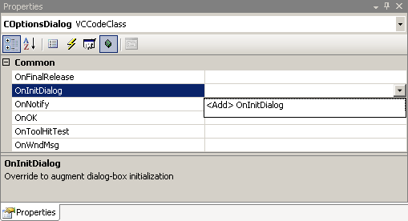
At this point there will be a lot of MFC generated code for you to look through, most of which is beyond the scope of this article. We'll cover some of it. First let's take a look at, and add to, the header file OptionsDialog.h. Here is the code (changes bolded).
#pragma once
#include "afxwin.h"
// COptionsDialog dialog
class COptionsDialog : public CDialog
{
DECLARE_DYNAMIC(COptionsDialog)
public:
// Standard Constructor
COptionsDialog(bool bRowColumn, CWnd* pParent = NULL);
virtual ~COptionsDialog();
// Dialog Data
enum { IDD = IDD_DIALOG_OPTIONS };
protected:
// DDX/DDV support
virtual void DoDataExchange(CDataExchange* pDX);
DECLARE_MESSAGE_MAP()
public:
CStatic m_ctrlStaticText1;
CStatic m_ctrlStaticText2;
int m_nValue1;
int m_nValue2;
afx_msg void OnBnClickedButtonDefaults();
virtual BOOL OnInitDialog();
private:
/* Is this dialog for row/column (true)
or width/height (false)? */
bool m_bRowColumnDialog;
};
We added another variable to the argument list for the constructor so that the dialog can be built for both the row/column and width/height information. If we pass in "true" then the dialog will prompt the user for number of rows and columns in the game board. When it is "false" the dialog will ask for width and height of the blocks in the game board. We implement all of this functionality in the following (changes bolded).
// OptionsDialog.cpp : implementation file
#include "stdafx.h"
#include "SameGame.h"
#include "OptionsDialog.h"
// COptionsDialog dialog
IMPLEMENT_DYNAMIC(COptionsDialog, CDialog)
COptionsDialog::COptionsDialog(bool bRowColumn, CWnd* pParent)
: CDialog(COptionsDialog::IDD, pParent)
, m_nValue1(0)
, m_nValue2(0)
, m_bRowColumnDialog(bRowColumn)
{
}
COptionsDialog::~COptionsDialog()
{
}
void COptionsDialog::DoDataExchange(CDataExchange* pDX)
{
CDialog::DoDataExchange(pDX);
DDX_Control(pDX, IDC_STATIC_TEXT_1, m_ctrlStaticText1);
DDX_Control(pDX, IDC_STATIC_TEXT_2, m_ctrlStaticText2);
DDX_Text(pDX, IDC_EDIT_VALUE_1, m_nValue1);
DDX_Text(pDX, IDC_EDIT_VALUE_2, m_nValue2);
}
BEGIN_MESSAGE_MAP(COptionsDialog, CDialog)
ON_BN_CLICKED(IDC_BUTTON_DEFAULTS,
&COptionsDialog::OnBnClickedButtonDefaults)
END_MESSAGE_MAP()
// COptionsDialog message handlers
void COptionsDialog::OnBnClickedButtonDefaults()
{
// Do things differently for the different dialogs
if(m_bRowColumnDialog)
m_nValue1 = m_nValue2 = 15; // 15x15 board
else
m_nValue1 = m_nValue2 = 35; // 35x35 blocks
// Have the controls updated to the new values
UpdateData(false);
}
BOOL COptionsDialog::OnInitDialog()
{
CDialog::OnInitDialog();
// Setup the dialog based on the dialog type
if(m_bRowColumnDialog)
{
// First update the title of the dialog
SetWindowText(_T("Update Block Count"));
// Next change the static text labels
m_ctrlStaticText1.SetWindowText(_T("Rows"));
m_ctrlStaticText2.SetWindowText(_T("Columns"));
}
else
{
// First update the title of the dialog
SetWindowText(_T("Update Block Size"));
// Next change the static text labels
m_ctrlStaticText1.SetWindowText(_T("Block Width"));
m_ctrlStaticText2.SetWindowText(_T("Block Height"));
}
return TRUE;
}
The first thing we do is update the constructor to take the Boolean value that tells us what type of dialog we are creating. This is simple. The next change we've made is to reset the values to the defaults, for rows/columns the values are both 15 and for the width/height the values are both 35. Then to update the controls with the new values we must call the UpdateData function passing in false as the argument. The argument is a Boolean flag that indicates the direction of update or what is being updated, the control (false) or the variable (true). Passing in true would reset the changes that you just made by going to the control, reading the contents, and saving it to the variable. We want to update the control with the new value of the variable so we pass in false.
Lastly we put the code into the OnInitDialog function. This is a function that is called right before the dialog is first shown to the user. This is where we can set up the dialog. So for a row/column dialog we set the title of the dialog to "Update Block Count" with the SetWindowText function and the _T() macro which we talked about in the second article. Then we update the text in the static text controls by using the function of the same name in that control object. We set them to "Rows" and "Columns". If it is a width/height dialog we change the title and labels to reflect that. That is all that needs to be done in the dialog, it should all function properly now.
Our final step is to set up a couple of event handlers in the view for the two menu options that we are working with. We do this through the Properties window from the header file for the view (SameGameView.h). Click on the events button, the one that looks like a lightning bolt, expand the ID_SETUP_BLOCKCOUNT option and add the COMMAND event handler. Do this with the ID_SETUP_BLOCKSIZE option also.
We won't need to make any changes to the view's header file other than the changes that adding those two handlers did automatically. Below are the only changes that were made automatically.
afx_msg void OnSetupBlockcount();
afx_msg void OnSetupBlocksize();
The real changes happen in the implementation or source file of the view, SameGameView.cpp. In order to use the options dialog that we just created we must include the header file in the view's source file. Here are the first few lines of that source file (changes bolded).
#include "stdafx.h"
#include "SameGame.h"
#include "SameGameDoc.h"
#include "SameGameView.h"
#include "OptionsDialog.h"
#ifdef _DEBUG
#define new DEBUG_NEW
#endif
Just a simple include of the OptionsDialog.h file. Next we fill in the two event handlers that we just added. Both of these functions are essentially the same except for in the five bolded locations in each function that we see below.
void CSameGameView::OnSetupBlockcount()
{
// First get a pointer to the document
CSameGameDoc* pDoc = GetDocument();
ASSERT_VALID(pDoc);
if(!pDoc)
return;
// Create the options dialog
COptionsDialog dlg(true, this);
// Set the row and column values
dlg.m_nValue1 = pDoc->GetRows();
dlg.m_nValue2 = pDoc->GetColumns();
// Display the dialog
if(dlg.DoModal() == IDOK)
{
// First delete the board
pDoc->DeleteBoard();
// Get the user selected values
pDoc->SetRows(dlg.m_nValue1);
pDoc->SetColumns(dlg.m_nValue2);
// Update the board
pDoc->SetupBoard();
// Resize the view
ResizeWindow();
}
}
void CSameGameView::OnSetupBlocksize()
{
// First get a pointer to the document
CSameGameDoc* pDoc = GetDocument();
ASSERT_VALID(pDoc);
if(!pDoc)
return;
// Create the options dialog
COptionsDialog dlg(false, this);
// Set the width and height values
dlg.m_nValue1 = pDoc->GetWidth();
dlg.m_nValue2 = pDoc->GetHeight();
// Display the dialog
if(dlg.DoModal() == IDOK)
{
// First delete the board
pDoc->DeleteBoard();
// Get the user selected values
pDoc->SetWidth(dlg.m_nValue1);
pDoc->SetHeight(dlg.m_nValue2);
// Update the board
pDoc->SetupBoard();
// Resize the view
ResizeWindow();
}
}
Just like every other event handler that we've created, we first get a pointer
to the document. Then we create the dialog by instantiating an instance of
that class. Here is the first difference between the two functions. In the first
function, OnSetupBlockcount, we pass in the true value, and in the second
function, we pass in
false. We've already discussed what this does but here is where we do
it. The next two lines set the public integer values m_nValue1 and m_nValue2
to be the rows and columns for the first function and the width and height for
the second. By setting these values before calling DoModal on the dialog we
ensure that the values start in their corresponding edit controls. The next
line is where we actually pop-up and display the dialog with the DoModal
function. This shows the dialog and doesn't return control to the application
until the user clicks Ok, Cancel or the X button to close. Then the function
returns a value based on how the user closed the dialog. Here we are testing
for Ok so we compare the return value against IDOK. If the user clicked Ok
then we continue making changes. If not we ignore everything that happened and
continue on.
If the user clicked Ok we first have to delete the old game board and free the memory. Once that is done we can use our "setter" functions on the document to store those values that the user selected. This is the final set of differences; we use different setters depending on the function because we are working with different values in each function. Once they are set in the document and the game board we need to create a new game board by calling SetupBoard. This will create a new game board with the new selected options. Finally we resize the window to match the new number of rows/columns or the new block size. Your game should now be able to look like these.
Conclusion
Our game development is nearing complete. With only one article left, we've come a very long way. In this article we created a new options dialog to be able to prompt the user for size information. We then updated the game board accordingly. These options allow the user to have many different experiences. What level can you completely clear at with a game board of five rows by five columns? There are lots of combinations of options that can change the difficulty of the game and make you change your strategy. That is what makes a game fun, begin able to replay it with different options in different ways.
Source Code from Part 4
Continue to Part 5: Adding Undo/Redo Functionality and Keyboard Accelerators